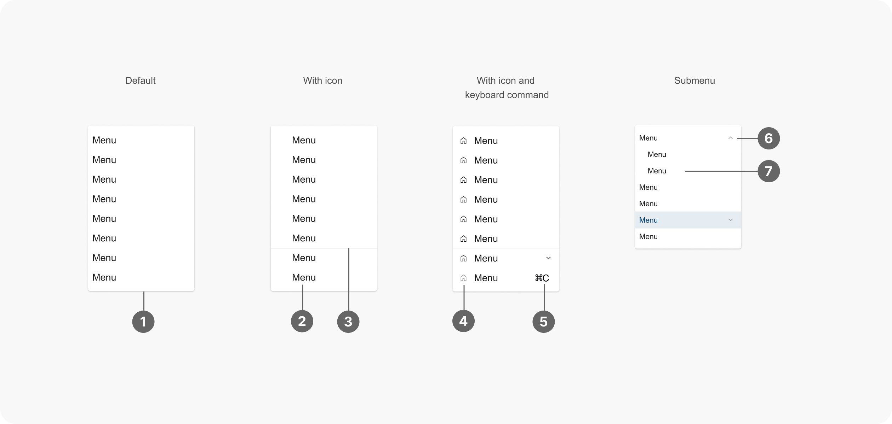

Menu 選單
概述
選單是一種用於呈現導航選項或操作命令的元件。它通常以列表形式呈現，包含多個可點擊的項目，每個項目代表一個特定的動作或導航目標。選單可以是垂直的、水平的，也可以是多層級的。
使用時機
選單常用於以下情境：
- 導航：當應用程式或網站有多個部分或頁面時，可使用選單提供導航選項，讓使用者可以輕松地在不同頁面或功能之間切換。例如：網站或應用程式頂部或側邊的主要導航選單。
- 操作：當需要提供多個操作命令，且這些命令與特定上下文或選取的項目相關時，可使用選單將其組織在一起，例如：
- 右鍵選單 (Context Menu)：在特定元素上點擊右鍵時彈出的選單，提供與該元素相關的操作命令。
- 工具列選單 (Toolbar
Menu)：在工具列上點擊按鈕或圖示時彈出的選單，提供與該工具或功能相關的操作命令。
- 更多選項選單 (More Options Menu)：當空間有限時，將一些不常用的操作命令隱藏在 "更多選項"
選單中。
- 空間有限：當螢幕空間有限，無法一次顯示所有導航選項或操作命令時，使用選單可以節省空間。例如：
- 下拉式選單 (Dropdown Menu)：點擊按鈕或其他觸發元素後，從上方或下方彈出，顯示選項列表。
- 漢堡選單 (Hamburger Menu)：在行動裝置上常見的選單形式，點擊圖示後展開選單。
- 複雜資訊架構：當應用程式或網站的資訊架構比較複雜時，使用多層級選單可以幫助使用者更好地瀏覽和查找內容。例如：
- 巨型選單 (Mega
Menu)：一種大型、多層級的下拉式選單，通常包含分類、子分類和相關連結，適用於電商網站或內容豐富的網站。
- 樹狀選單 (Tree Menu)：以樹狀結構呈現多層級導航選項，適用於檔案管理系統或複雜的後台管理介面。
使用規範
當您取用選單進行設計時，應考慮以下原則：
- 說明清晰：每個選單項目的標籤應簡潔明瞭，避免過長的描述，讓使用者能快速理解其功能或導航目標。
- 圖示輔助（選擇性）：如果使用圖示來輔助說明選單項目，應確保圖示的意義明確且易於理解。
- 分組：將相關的選單項目分組，並使用分隔線或標題來區分不同的組別，提高選單的可讀性和組織性。
- 層級：對於複雜的選單，使用多層級結構，讓使用者可以逐步深入查找。子選單的層級不宜過多，建議不超過三層。
- 互動與回饋：提供明確的觸發方式與視覺回饋，確保使用者清楚知道如何開啟和關閉選單、辨識選單的狀態（展開/收合）和選中的選項。
- 快捷鍵（選擇性）：為常用的選單項目提供快捷鍵，方便使用者快速操作。快捷鍵應易於記憶且符合操作習慣。
設計範例

- 容器 (Container)：整體包裝選單的區域。
- 文本 (Text)：選單項目的描述文字。
- 分隔線 (Divider)（選擇性）：分隔不同組別的選單項目，請在需要時使用。
- 圖示輔助 (Leading Icon)（選擇性）：輔助說明選單項目的含義。
- 快捷鍵
(Command)（選擇性）：自定義快捷鍵組合圖示，建議統一放置在選單文字右側。若您的產品有此需求，請自行繪製圖示，建議尺寸為
32px x 24px，或尋求設計中心協助。
- 箭頭圖標 (Arrow Icon)：提供明確的視覺提示，讓使用者知道點擊或懸停在該選單項目上會展開子目錄。
- 子目錄 (Submenu)（選擇性）：為主要選單項目提供的附加選項。